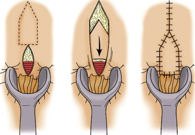

Anorectal Stricture
DEFINITION
Narrowing in anal canal; from pelvic floor to anal verge distally.
D E A B M I M
EPIDEMIOLOGY
Vast majority are iatrogenic
D E A B M I M
AETIOLOGY
Pathogenesis
Iatrogenic
Eg. during haemorrhoidectomy; if too much anoderm excised, leads to
stricture.
Also with fistulae, fissure, anal warts, congenital defects, ileal
pouch-anal anastomoses
Tumours
Bowen; Paget
Giant conduloma acuminatum
SCC anus
Verrucous Ca
Rectal AdenoCa
Inflammatory
Post Radiation
TB
STDs
IBD
D E A B M I M
BIOLOGICAL BEHAVIOUR
Pathophysiology
Varies by causes above
D E A B M I M
MANIFESTATIONS
Symptoms
'Constipation'
Decrease in stool caliber
Difficult or incomplete evacuation
Some may have incontinence
Signs
Observation and exam confirms stricture
Mild = tight but still
allows DRE
Moderate = requires
forceful DRE only achievable under anaesthetic
Severe = does not even
allow DRE under anaesthetic.
D E A B M I M
INVESTIGATIONS
Biopsy to rule out malignancy if reqd
D E A B M I M
MANAGEMENT
Pts will have tried laxatives, enemas and suppositories
Offer therapy to all.
1. EUA
Under anaesthetic to rule out stricture
2. Principles
Treat stricture but preserve continence
- warn all that they may become incontinent.
Treat asymptomatic only if serious underlying cause eg neoplasia.
3. Mild
Stool bulking agents
--> naturally dilating action of stool passage
And possibly dilatation.
- though repeated use can cause additional scarring and stricture
--> thus generally limit to patients who fail conservative Rx,
are not good operative candidates and have IBD or pelvic radiation.
Often will resolve after some months.
4. Stricturotomy and
Stricturoplasty
Effective in mild to moderate disease
E.g. past low coloanal anastomoses, ileal-anal pouch or stapled
haemorrhoidectomy.
1. Small anoscope to visualize stricture
2. Divide stricture longitudinally in 3-4 quadrants
- leave open
Highly successful for short mild strictures.
- if fails, move to advancement flaps.
5. Advancement Flaps
Scar excision followed by advancing normal local tissue onto the
defect.
Principles are adequate blood supply and adequate mobilization (no
tension)
Lone Star retractor.
Bowel prep, antibiotics, prone jack-knife for best exposure.
YV and VY flaps
House Flap
- best option; ~90% improvement rate, 80% satisfaction

S Flap
Major flap for severe / complex cases; plastics
IBD or Post Rads
Surgical options limited by potential for non-healing wound
Bulking, anal dilatation and stricturotomy are mainstays
Specialists can do advancement flaps in complex cases, but if
non-healing will require a permanent colostomy.
D E A B M I M
REFERENCES
Cameron 10th